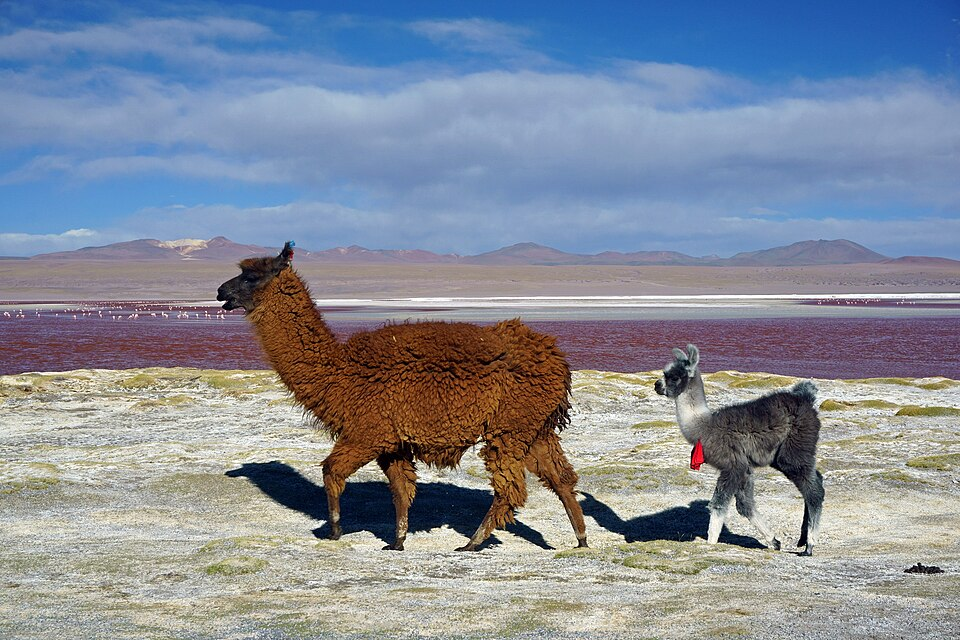
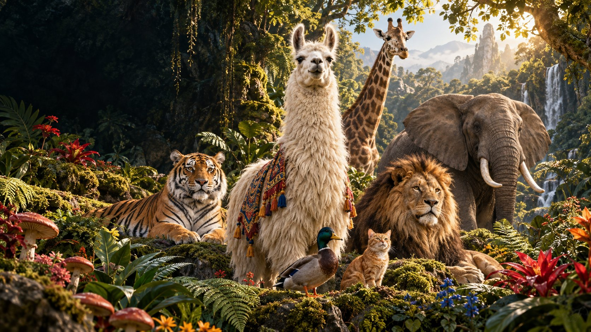
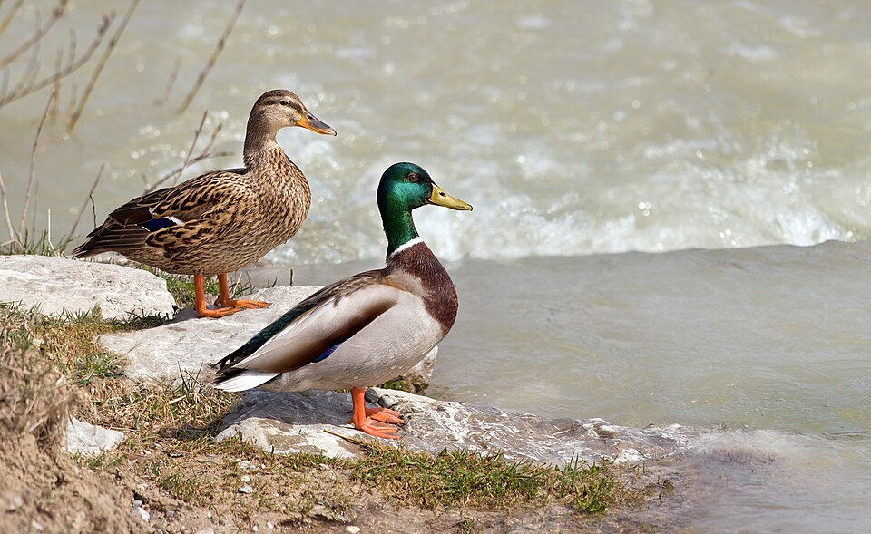
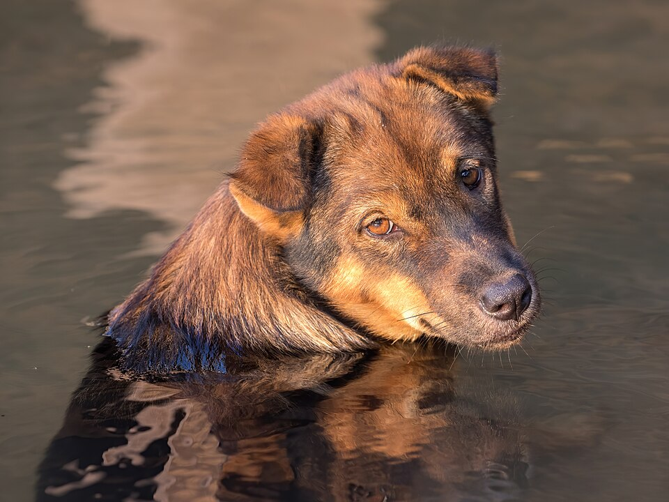
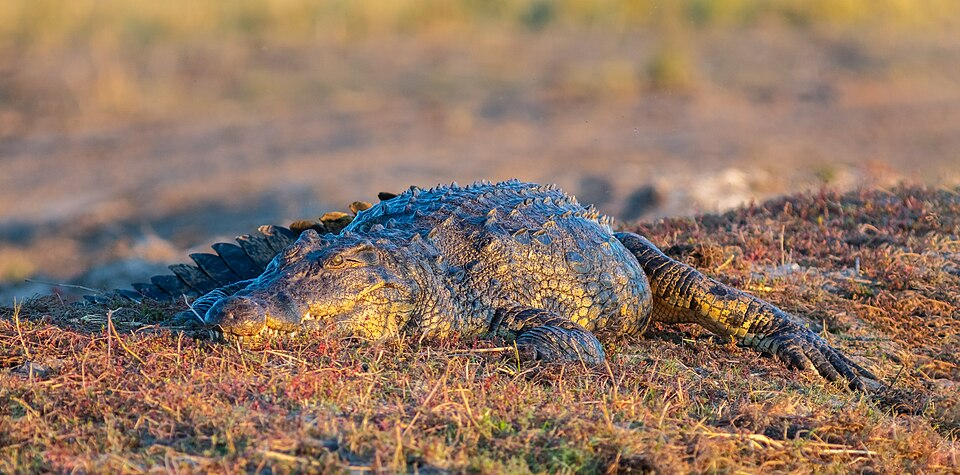
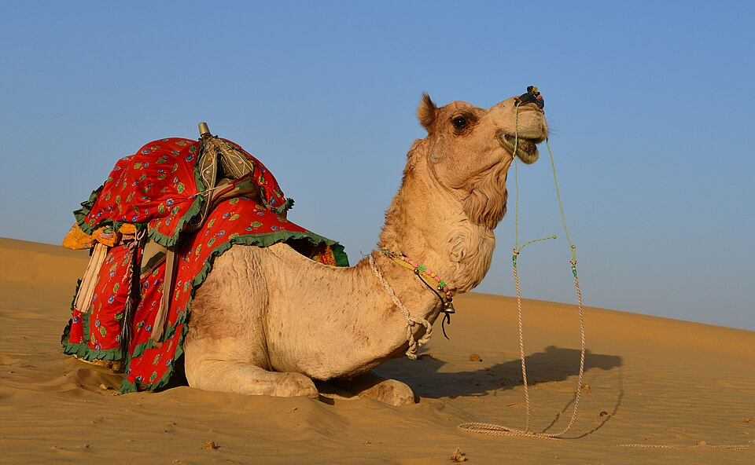
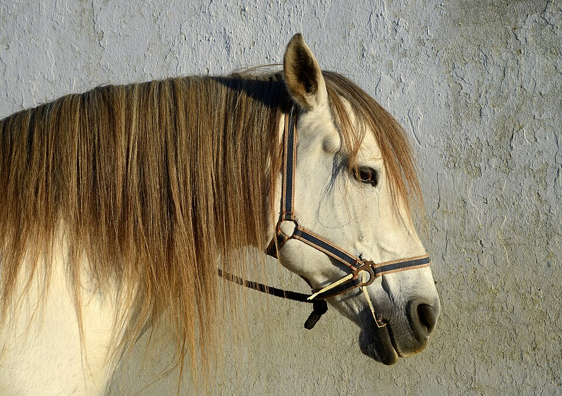
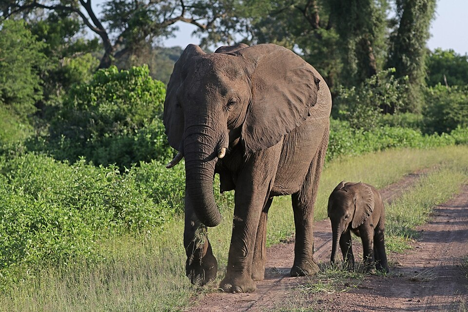
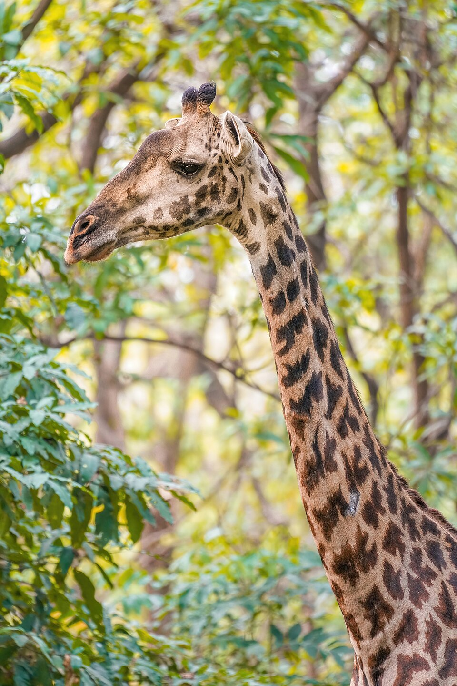
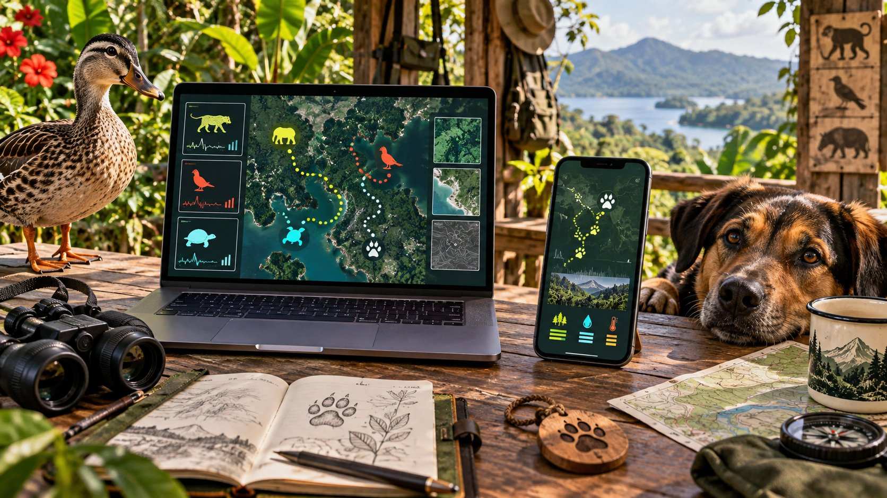

01 Meadow crewLama glama
LLAMA
The soft-spoken ambassador with excellent ears and impeccable mountain style.
Open field note
Llamas hum to communicate. Their ears and body posture also reveal how they are feeling.

01 The royal welcome
A whole lot of animals. One unforgettable kingdom. Come for the llamas, stay for the quacks, paws, stripes and very serious royal roars.
02 The big idea
Built for someone who said “I like all animals” — and absolutely meant it.
This is a digital kingdom where every resident gets a portrait, a personality and one brilliant fact. No tickets, no cages, just curiosity.
03 The royal directory
Filter by habitat, open a field note, or let the kingdom choose someone for you.
Showing all 11 royal residents.

01 Meadow crewLama glama
The soft-spoken ambassador with excellent ears and impeccable mountain style.
Llamas hum to communicate. Their ears and body posture also reveal how they are feeling.

02 Pond patrolAnas platyrhynchos
Professional puddle inspector. Always dressed for unexpected weather.
Ducks spread oil from a preen gland across their feathers, helping the outer layer repel water.
 03
Castle cat
03
Castle cat
Felis catus
Keeper of windowsills, cardboard boxes and several royal secrets.
A cat's whiskers are sensitive touch tools that help it judge nearby spaces and air movement.

04 Best friendCanis familiaris
Chief welcome officer. Tail-powered, loyal and ready for every expedition.
A moist nose helps trap scent particles, giving a dog's remarkable sense of smell more information.

05 River royaltyCrocodylus niloticus
Ancient armor, patient eyes and the quiet confidence of a river legend.
Crocodiles replace worn teeth throughout their lives and can grow thousands of teeth over time.

06 Desert clubCamelus dromedarius
The long-distance expert who makes hot sand look like a royal runway.
A camel's hump stores energy-rich fat, not water. That reserve helps when food is scarce.

07 Meadow crewEquus caballus
Wind in the mane, thunder in the hooves and kindness in the eyes.
Horses can doze while standing thanks to a system of tendons and ligaments called the stay apparatus.

08 Gentle giantLoxodonta africana
A family-first giant with a memory, a map and a language of rumbles.
Elephants use very low rumbles that can travel far through air and ground to reach distant family.

09 High societyGiraffa camelopardalis
Head in the leaves, feet on the ground, always seeing the bigger picture.
A giraffe's dark, flexible tongue can be around 45 centimetres long — perfect for reaching leaves.
 10
The pride
10
The pride
Panthera leo
Big voice, excellent mane, surprisingly committed to afternoon naps.
Lions are the most social wild cats and usually live in family groups called prides.
 11
Stripe society
11
Stripe society
Panthera tigris
Forest flame, silent footsteps and a stripe pattern nobody else owns.
Every tiger has a unique stripe pattern — and the skin beneath its fur is striped too.
04 Wild truths
Three details that make an already wild world even more remarkable.
A giraffe uses its long tongue and mobile lips to browse between thorns and reach the best leaves.
No two tigers wear the same pattern. Researchers can identify individuals from photographs of their stripes.
Some elephant calls are below the range of human hearing and can carry over great distances.
05 Laptop + phone expedition
Track paws, feathers and rumbles from a ranger's laptop or carry the whole field station in your pocket.

RANGER DESK / ONLINE POCKET SAFARI / SYNCEDChoose a signal
STRIPE SIGNAL / 11
Camera-trap photos can identify a tiger by its one-of-a-kind stripes.
A laptop turns many sightings into one clear habitat story.
A phone keeps maps and field notes close without taking you out of the moment.
Good observation helps people protect routes, water and safe places to rest.
06 The royal greeting machine
Pick a resident. The kingdom will handle the formalities.
“Hmmm hello, Your Majesty Jemoon. The llamas saved you the best mountain view.”
CAN YOU SPOT THE WILD TRUTH?
07 Kingdom moments
High necks, low rumbles, wet paws and one absolutely unbothered crocodile.